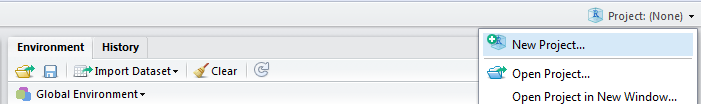
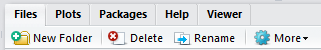
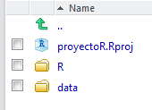
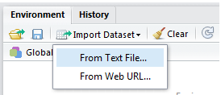
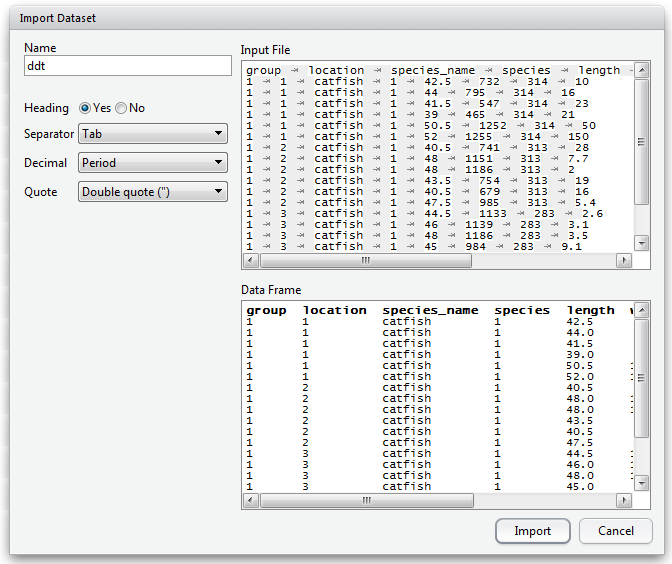
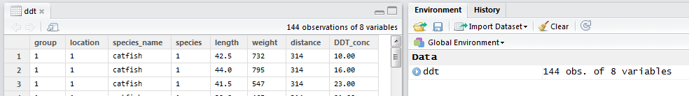
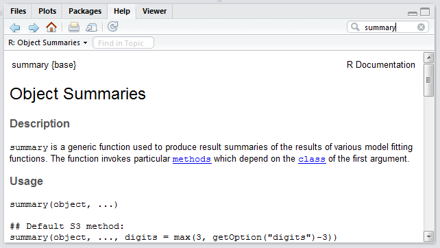
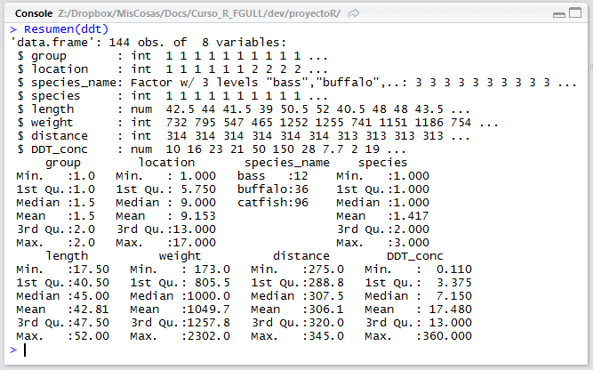
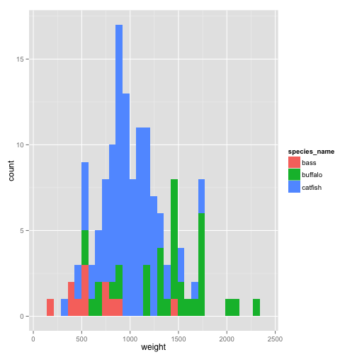

Curso introductorio de  Introducción a la interfaz RStudio
Introducción a la interfaz RStudio
Profesores: Carlos Pérez González Marcos Colebrook Santamaría (curso de la Fundación General ULL)
2014
Contenidos
- ¿Qué es RStudio?
- Vistazo rápido y características de RStudio
- Instalación de RStudio
- Descripción del entorno
- Primer proyecto dentro de RStudio
- Cargar y guardar datos en el proyecto
- Gestión del historial
- Primer script en RStudio
- Usando la ayuda
- Extracción y ejecución de funciones
- Secciones, plegado y navegación de código
- Visualización de datos
- Los comandos
plot, qplot y manipulate
- Instalación de paquetes en RStudio
- Generando informes HTML a partir de scripts de R
- Atajos de teclado
- Ejercicios
- Futuro de RStudio
- Referencias
¿Qué es RStudio?
- RStudio es una herramienta IDE (Integrated Development Environment) para R, libre y gratuita que facilita:
- Trabajar con R y gráficos de R de forma interactiva.
- Organizar el código y mantener múltiples proyectos.
- Mantenimiento de los paquetes de R.
- Crear y compartir informes.
- Compartir código y colaborar con otros usuarios.
- RStudio fue fundado por J.J. Allaire, y también es una empresa que se dedica a vender servicios de consultoría y formación.
- RStudio NO realiza ninguna operación estadística. Solo facilita realizar dichas operaciones sobre R.

Características de RStudio
- Integración de la consola de R: se pueden teclear comandos de R directamente en la consola de RStudio.
- Ejecución de código: permite ejecutar código directamente del fichero de script.
- Resaltado de la sintaxis: realiza una coloración automática de los instrucciones y de las funciones.
- Ayuda con los paréntesis, corchetes y comillas: autocompleta estos símbolos al abrirlos.
- Completado de comandos: completa los comandos mientras se escriben usando la tecla
Tab.
- Atajos de teclado.
- Navegador de objetos: se pueden inspeccionar todos los objetos de la sesión R.
- Gestión del historial de comandos: para poder usarlos de nuevo.
- Navegación del código: permite saltar entre funciones dentro del código.
- Importación y visualización de datos: en formato de tabla.
- Integración de gráficos: manipulación, zoom y exportación.
- Gestión de proyectos: se puede cambiar de un proyecto a otro fácilmente.
- Control de versiones: se integra bien con
git y svn.
- Generación de documentos: del tipo PDF, HTML y otros más avanzados con un solo click.
Instalación de RStudio
- Antes de instalar RStudio, necesitas instalar R. Se puede obtener desde:
- Una vez instalado R, se puede instalar RStudio en tu ordenador (versión Desktop) dependiendo del sistema operativo:
- Solo en Linux, también se puede instalar RStudio Server, el cual permite acceder al entorno desde un navegador web:
Descripción del entorno
- Editor de código fuente (scripts) y visor de datos: permite editar código fuente R y ver los datos del tipo data.frame.
- Espacio de trabajo e historial: muestra los objetos (datos/variables) usados en la sesión actual y el historial de comandos.
- Consola R: permite trabajar con R directamente.
- Ficheros, visualizaciones, ayuda y paquetes: permite navegar por los ficheros y carpetas, mostrar los gráficos y visualizaciones, usar la ayuda, e instalar paquetes o cargar paquetes ya instalados.
- Todos los paneles permiten ser minimizados o maximizados, como ventanas normales de Windows.

Primer proyecto dentro de RStudio
- Para crear un proyecto, vamos a la esquina derecha de la barra de herramientas:

- También podemos hacer lo mismo desde File > New Project...
- Le vamos a poner el nombre proyectoR.


Directorios del proyecto

- Hacemos clic en New Folder, y le damos el nombre
R.
- Haremos lo mismo para crear la carpeta
data.
- Por tanto, la carpeta del proyecto quedaría como:

Cargar datos en el proyecto
- Vamos a cargar unos datos para poder empezar a trabajar:

- Aquí podemos elegir:
- Cargar los datos desde un fichero de texto (From Text File…).
- O desde una URL de una web (From Web URL…).
- Desde esta URL podemos descargar el fichero
ddt.txt, o usarla directamente:
El fichero ddt.txt
- En este archivo se recogen las siguientes variables sobre una muestra de n=144 peces:
group: Grupo de observaciones (mediciones en dos temporadas).location: Lugar de medición.species_name: Nombre de la especie del pez.species: Código de especie (de 1 a 3).length: Longitud del pez.weight: Peso del pez.distance: Distancia del lugar a la desembocadura del río.DDT_conc: Concentración de DDT (% de peso) medida.

- El fichero procede de datos sobre concentración de DDT en peces de río.
- RStudio deduce casi todas las opciones de importación:
- Heading: si trae el nombre de la variable.
- Separator: tipo de separador entre datos.
- Decimal: símbolo para el punto decimal.
- Quote: símbolo para los comentarios.
- Al final, los datos se cargan en un
data.frame de R con el mismo nombre que el fichero de datos (ddt).
Datos cargados en RStudio

- Los datos cargados se muestran en el panel superior izquierdo, y en el panel de espacio de trabajo (o entorno).
- Vamos a guardar estos datos en un fichero CSV (comma separated values) en el directorio
data de nuestro proyecto.
- Para ello, empezaremos a usar la consola de R, y las funciones incorporadas de completado de comandos y de nombres de carpetas/ficheros.
Historial de RStudio
- Hay tres formas para re-usar los comandos ya tecleados en RStudio:
- Pulsando las teclas de fecla arriba o abajo.
- Pulsando Ctrl+▲.

- Explorando la pestaña History en el panel derecho superior:

- Se puede seleccionar un comando o varios (usando la tecla
Shift=Mayúsc), y ejecutar pulsando Enter.
- Asimismo, se pueden salvar a un fichero llamado
.Rhistory, en la carpeta del proyecto.
- También se pueden pasar a la consola con el comando To Console para ser ejecutados, o a un script directamente con el botón To Source.
- Por último, se pueden eliminar con la tecla
Supr (Del) o con el botón correspondiente, o borrar completamente todo el historial con el botón de la escoba.
Primer script R en RStudio
- Una vez cargados los datos, vamos a escribir el primer script en lenguaje R para hacer un primer análisis.
- Hacemos click en el icono + verde del editor de scripts (izquierdo superior), y elegimos R Script.


- Las acciones más interesantes sobre un script de R son:
- Disco: salvar el fichero.
- Lupa: buscar y reemplazar.
- Varita mágica: herramientas útiles (algunas las veremos luego).
- Run: ejecuta el código seleccionado (Ctrl+Enter).
- Re-Run: ejecuta el último código que seleccionamos.
- Cuaderno: compila el script R a un fichero HTML (lo veremos luego).
- Las opciones del tipo Source sirven para cargar el código fuente al espacio de trabajo de R (lo veremos luego).
- Vamos a introducir los primeros comandos R en el script:
# estructura de los datos
str(ddt)
# resumen de los datos
summary(ddt)
- Guardamos este script pulsando el botón del disco (arriba), o en el menú File > Save, con el nombre
funciones.R en el directorio R de nuestro proyecto.

- Una vez guardado, podemos ejecutar el script de varias formas:
- Sobre la línea en la que estamos, pulsamos el botón Run o Ctrl+Enter.
- O seleccionamos todo el script, y hacemos lo mismo que en el punto anterior.

Usando la ayuda
- Ahora es buen momento para empezar a usar la ayuda para, por ejemplo, el comando
summary:

Ejecutando funciones propias
- Si tecleamos la siguiente línea en la consola de R, nos dará un error:
Resumen(ddt)
## Error: no se pudo encontrar la función "Resumen"
- Esto sucede porque la función Resumen no ha sido cargada (sourced) al entorno o espacio de trabajo de nuestro proyecto.
- Para poder usar la función
Resumen(datos) tenemos que hacer lo siguiente:

- Si hubiéramos elegido la opción Source with Echo, obtendríamos el mismo resultado además de mostrar todo el código cargado.
- Las funciones cargadas aparecen, al igual que los datos, en el panel derecho superior de Environment, en la sección de Functions.
- Ya podemos usar nuestra nueva función
Resumen pasándole como parámetro los datos de ddt:

- Si vamos a estar cambiando la función continuamente, podemos activar la opción Source on Save para que la cargue al entorno automáticamente después de salvar el script.
Secciones del código
- Otra característica interesante de RStudio (y no de R) es la posibilidad de estructurar el código en secciones.
- Las secciones se pueden crear desde el menú Code > Insert Section, o simplemente poniendo un comentario (
#) con un nombre de sección y acabado en 4 guiones (----):
# <NombreDeLaSección> ----
- Podemos aprovechar el comentario de la función Resumen para hacer nuestra primera sección:

- Fíjense que dicha sección aparece en la parte inferior del editor como navegación del código, que luego veremos.
Plegado de código/secciones
- Otra característica muy útil de RStudio es el plegado de las secciones o de partes del código que estén rodeadas por llaves
{}.
- Al plegarse aparecerá un pequeño triángulo que permite colapsar o expandir el bloque de código.

Navegación de código
- La navegación de código en RStudio es una utilidad que permite editar el código de forma más rápida.
- Se puede acceder a una línea concreta pulsando Alt+Shift+G, o en el menú Edit > Go to Line…
- Con la opción Code > Jump To… (Alt+Shift+J) se puede saltar directamente a funciones o secciones del código.

- Otra opción muy útil es la de ir a un fichero/función determinado usando Code > Go To File/Function (Ctrl+.). RStudio mostrará todos los ficheros o funciones dentro del directorio de trabajo que empiecen con los caracteres tecleados.

Visualización de datos
- La visualización (o dibujado de gráficos) es una parte esencial del análisis de datos. RStudio tiene un panel específico para la visualización de datos (Plots) abajo a la derecha.
- Para ilustrar el manejo de las instrucciones de visualización, vamos a usar escribir el siguiente código dentro de nuestro script de R debajo de la función
Resumen:
# cargamos los datos del fichero
ddt <- read.csv("data/ddt.csv")
# pesos de la especie “catfish”
catfish.weight <- ddt$weight[ddt$species_name == "catfish"]
# histograma del peso de los “catfish”
hist(catfish.weight)
- Al teclear
ddt$ podemos pulsar la tecla Tab para que nos muestre la lista de variables de ddt. Esto se denomina completado de objetos.
Opciones de la pestaña Plot
- Con la opción Zoom se abre una nueva ventana con una versión más grande del gráfico.
- El botón Export nos permite guardar el gráfico como una imagen en varios formatos (PNG, JPEG, TIFF, etc) o como un fichero PDF.
- También podemos copiar el gráfico actual al portapapeles del sistema.
- En caso de haber generado varios gráficos, las flechas permiten avanzar o retroceder en la visualización de dichos gráficos.

El comando plot
- Una vez vista la forma de trabajar con gráficos dentro de RStudio vamos a ver opciones más avanzadas de los mismos.
- Uno de los comandos más útiles para dibujar gráficos en R es
plot.
- La librería que contiene el comando
plot es graphics, la cual suele estar cargada por defecto. En caso de no estarlo, habria que ejecutar el siguiente comando:
# librería necesaria para 'plot'
library(graphics)
- El gráfico más simple es dibujar simplemente los pesos de la especie
catfish:
# gráfico de los pesos de todos los catfish
plot(catfish.weight)
- En primer lugar, vamos a añadir color, unas nuevas etiquetas en los ejes (
xlab, ylab) y el título principal (main), además de una línea en el eje Y que indica la media de los valores.
plot(catfish.weight, col="blue", xlab="Longitud", ylab="Peso", main="Pesos de los catfish")
# línea horizontal que marca la media de los pesos
abline(mean(catfish.weight), 0, col="red", lwd=2)
- Ahora, podemos dibujar un gráfico que muestre la longitud (
length) frente al peso (weight) de la especie catfish.
# longitudes de la especie "catfish"
catfish.length <- ddt$length[ddt$species_name == "catfish"]
# gráfico de comparación de la longitud vs. peso de los "catfish"
plot(x=catfish.length, y=catfish.weight, col="blue", xlab="Longitud", ylab="Peso",
main="Longitud vs. Peso de los catfish")
Instalación de paquetes en RStudio
- Antes de ver el comando
qplot, tenemos que aprender como instalar nuevos paquetes de R.
- Una de las pestañas más interesantes en el lado derecho es Packages (paquetes):

- Check for Updates: permite actualizar los paquetes a sus últimas versiones.
- Install Packages: permite instalar paquetes desde CRAN (repositorio).

- Se puede conseguir el mismo efecto con el siguiente comando:
install.packages("<Nombre_de_la_librería>")
La función qplot
- El comando
qplotes una versión "quick" del comando plot, y permite crear gráficos complejos y avanzados de forma simple y rápida.
- Este comando está en la librería
ggplot2. Para usar dicha libreria podemos ejecutar el siguiente comando:
library(ggplot2)
En caso de que no esté instalada, habria que seguir los pasos descritos en la diapositiva de Instalación de paquetes en RStudio.
Por ejemplo, podemos hacer un gráfico rápido que permite visualizar la longitud (length) frente al peso (weight) del conjunto de datos ddt.
# longitud vs. peso de todos los peces
qplot(length, weight, data = ddt, col = species_name)
- Incluso podemos añadir una línea de tendencia (con un margen de error) a cada especie, simplemente añadiendo (sumando) la función
geom_smooth():
qplot(length, weight, data = ddt, col = species_name) + geom_smooth()
- Podemos usar las opciones que ya conocemos del comando
plot para personalizar este gráfico:
qplot(length, weight, data=ddt, col=species_name, xlab="Longitud", ylab="Peso",
main="Relación longitud/peso") + geom_smooth()
- Finalmente, podemos usar
qplot para generar también un histograma de los pesos de las tres especies juntas de forma automática:
# histograma usando 'qplot'
qplot(weight, data = ddt, fill = species_name)

El comando manipulate
- RStudio permite controlar de forma dinámica los gráficos generados con R.
- El comando que permite la interactividad entre el usuario y los gráficos generados.
- Las opciones de controles que permite
manipulate:
slider: control para un rango (min, max) numérico.picker: control sobre un conjunto de opciones fijas.checkbox: control de casilla de verificación.button: control de botón.
- Vamos a ver un pequeño ejemplo:
# control de selección para elegir la especie de pez
library(manipulate)
manipulate(
hist(ddt$weight[ddt$species_name == fish], xlab="Peso", ylab="Frecuencia",
main=paste("Histograma del peso de los", fish)),
fish = picker("bass", "buffalo", "catfish")
)

Atajos de teclado
- Como se ha visto a lo largo de este curso sobre RStudio, existen múltiples formas de realizar la misma acción dentro del entorno, a saber, desde los botones, el menú o los atajos de teclado.
- En cada apartado, se han ido comentado algunos atajos de teclado que pueden resultar interesantes.
- La tabla que contiene todos los atajos se puede obtener en el menú Help > Keyboard Shortcuts.

Ejercicios
- Hacer una función en R que muestre los histogramas de frecuencias de los pesos de las tres especies (
catfish, buffalo y bass) en uno solo usando el comando hist. (Pista: empezar por la especie catfish y usar add=TRUE).
- Hacer una función que use el comando
manipulate sobre el comando qplotpara que el usuario elija la especie sobre la cual quiere comparar la longitud (length) contra el peso (weight).